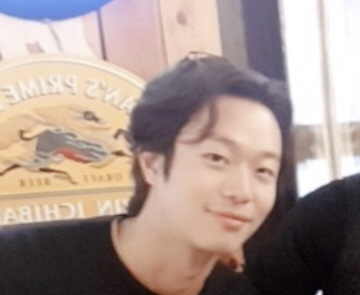

안녕하세요 이전의 헛소리들을 빼고 자기소개 글을 다시 작성합니다 ㅎㅎ
저는 아주아주아주 단조로운 생활을 하고 있어요..고시생처럼 공부하고 먹고 자고 운동하는 생활을 하고 있습니다.
불쌍한 말투로 말했지만 사실 아주 만족스러운 요즘이에요. 무언가 '한가지'에 몰두하는 삶을 살아본 적이 없었는데, 공부와 운동.
저에게 중요한 이 두가지에 몰두하고 있습니다.
조금 더 주절주절거려보자면, 두세명의 친구들과 함께 100days project라는 것을 진행하고 있어요.
자기가 정한 '작은 성공'을 지속적으로 100일간 성취해 나가는 프로젝트입니다.
저의 경우에는 3일 공부하고 하루 쉬는 패턴을 반복하면서, 체계화되어 있는 운동프로그램을 '빠짐 없이' 수행하는 거랍니다.
이 친구들과 일주일에 한번, 금요일 저녁에 모여 러닝을 하고 머리부터 발톱 끝까지 술로 적셔버리곤합니다.
이제는 제 힘으로 이뤄내지 않은 채 누려왔던 자유를 이제 제 손으로 만들어 누려가고 싶습니다.
(급진지)
이 공부와 멋쟁이사자처럼이 그것을 이루는데 중요한 역할을 할 것이라는 아~~~주 슈퍼vㅔ리 강력한 느낌이 듭니다.
잘부탁드려요!